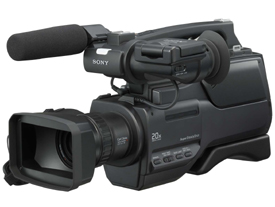

Mint emlékezhettek rá, néhány hete arra kezdeményeztünk
gyûjtést, hogy a Bombagyár TV-nek jó minõségû félprofi kamerát vegyünk, amivel broadcast minõségû felvételeket készíthetünk, akár DVD-készítéshez, akár más tévéknek való átadáshoz, mert az utóbbira is többször lett volna szükség, de nem tudtak mit kezdeni az öreg VHS technikával. A digitális technika elõnyeit megfigyelhettétek már Kesigomu Bombagyár TV riportjain is, õ egy Canon XL1-essel nyomja. Egy ilyen minõségû vállkamera kb. 5-600 ezer forint volt akkor.
Tegnap az alábbi levél érkezett hozzánk.
"Kedves bombagyárosok!
Ha még mindig szeretnétek kamerát venni, egy haverom eladna egy zsír új
SONY HVR-HD1000E gépet. Amerikából lett hozva néhány hete, de PAL-os
nem NTSC-s. Csak egyszer volt használva amikor kivették a dobozból és kipróbálták. MiniDV kazettás, HDV-DV rendszerû, 6.1 MP állókép rögzítés kártyára, lassított felvétel, nightshot. Azért nem kell, mert közben vett a stúdió egy jobbat. 320e forintért vihetitek."
Ez jó ajánlat, a legolcsóbb
bolti ár, amit találtam, 360 ezer forint. A gyûjtésre eddig 122 ezer forint futott be. A hiányzó mintegy 200 ezret adjuk össze, hogy felállhasson egy olyan forgatócsoport, amely olyasmit is megmutat, amit a "nagy" média nem akar vagy nem mer. Dokumentumfilmeket is tervbe vettünk forgatni. Ha úgy gondoljátok, érdemesek vagyunk a bizalmatokra, küldjetek egy-két ezer forintot nekünk, hogy karácsonyra megvehessük, voltaképpen nektek, ezt a kiváló készüléket. Ha esetleg több jön össze, lámpát is veszünk hozzá, vagy tartalék akkumulátorokat, szûrõket.
Banki átutalással ide lehet küldeni az adományokat:K&H Bank,
10404072 - 85495355 - 53531003Nemzetközi bankszámlaszám
(IBAN):
HU50 1040 4072 8549 5355 5353 1003SWIFT/BIC:
OKHB HUHB
Kedvezményezett neve: Polgár Tamás
Erre a számlára jönnek a Soviet Story pénzei is, ezért írjátok oda a közleménybe, hogy a kamerára külditek. Ugyanígy a postai utalvány esetében is. Köszi.
PayPal:tomcat@tomcatpolo.hu
Postai
úton ide lehet küldeni az adományokat:Polgár Tamás, 1383 Budapest, Pf. 1415
Személyesen is hozhattok adományokat Tomcat Polóboltjába, a
Teréz krt. 6 szám alatt. Ez a Rossmann és a Salamander üzletek közötti kapualj. Az udvaron balra,
a kék vasajtó az.
Mindenkinek nagyon köszönjük, és igyekszünk megszolgálni a
bizalmát!